Building Themes for WordPress
https://jtcoders.gitub.io/wordpress-themes
What are Themes?
Description from the Codex
WordPress Themes are files that work together to create the design and functionality of a WordPress site.
Let's take a closer look at a theme
The Files
WordPress file and folder structure
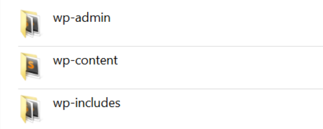
- wp-admin - WordPress core files, don't touch these!
- wp-content - Theme, plugin and uploaded files
- wp-includes - WordPress core files, don't touch these either!
The Files
Where theme files live
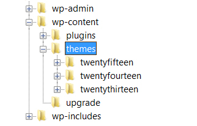- wp-content
- plugins
- themes
- twentyfifteen
- twentyfourteen
- twentythirteen
The Files
The theme files
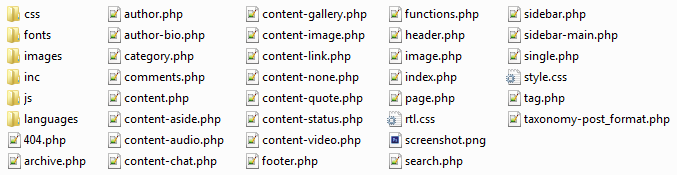
Modifying Themes
Now that I know where theme files live I can just edit them, right?
NO!
#1 Rule of WordPress Development
Never EVER edit WordPress core code.
This means do not edit:
- WordPress core files
- Plugin files
- Theme files
Why?
- Stuff gets broken
- Other plugins and themes may not work with your changes
- Updates wipe out your changes
So how do you customize a WordPress theme?
You create a theme that is a "child" of another theme
- Your child theme overrides the design elements you want changed and otherwise falls back to the parent.
- Your child theme can also override or add functionality to the parent theme.
How it Works
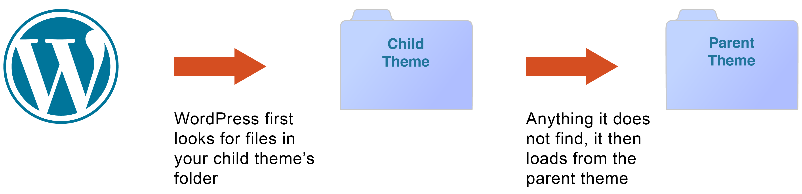
Your child theme's folder is a safe place where you can add css and php files without changing the parent theme.
If you break something you can just hit undo or remove your file. All parent theme files will remain intact.
Making a Child Theme
We'll make a child theme of Twenty Thirteen
What Your Child Theme Needs
In order for your child theme to work it needs 3 things
Really, it only needs 2 things, but 3 is better
What Your Child Theme Needs
Thing #1 - a style.css file
Define the general information for your theme.
/*
Theme Name: [Your Theme Name]
Theme URI: [URL for your theme if you have one]
Description: A description for your theme.
Author: [You]
Author URI: [Your URL]
Template: twentythirteen
Version: 1
*/
What Your Child Theme Needs
Thing #1 - a style.css file
Define the general information for your theme.
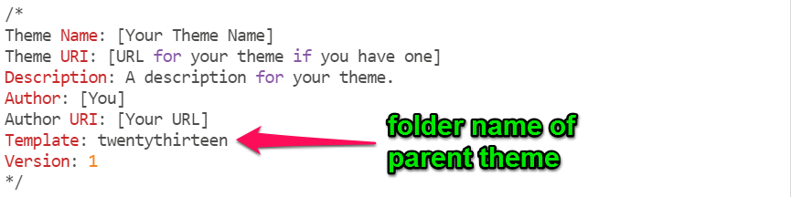What Your Child Theme Needs
Thing #2 - a functions.php file
Enqueue the parent and child theme stylesheets
<?php
add_action( 'wp_enqueue_scripts', 'theme_enqueue_styles' );
function theme_enqueue_styles() {
wp_enqueue_style( 'parent-style', get_template_directory_uri() . '/style.css' );
wp_enqueue_style( 'child-style',
get_stylesheet_directory_uri() . '/style.css',
array('parent-style')
);
}
What Your Child Theme Needs
Thing #3 - a screenshot
This is the thumbnail image that represents each theme in Appearance > Themes in the WordPress admin.
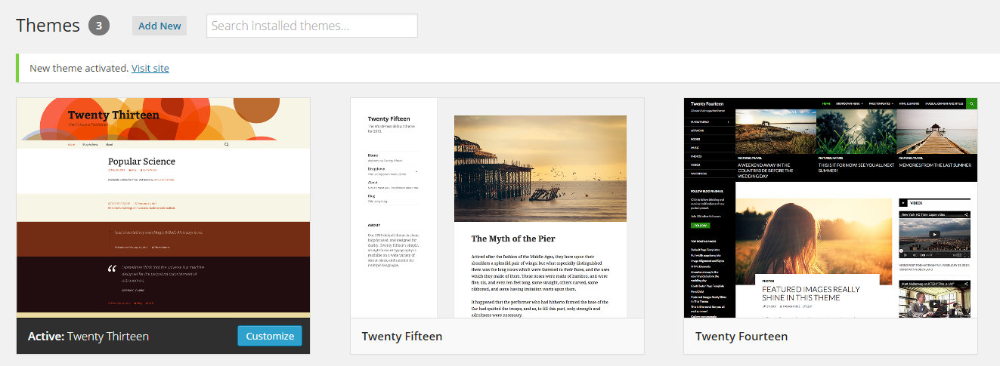
What Your Child Theme Needs
Thing #3 - a screenshot
Create a 880px by 660px image file, name it “screenshot.png” and place it into the child theme’s folder.
Add your child theme
-
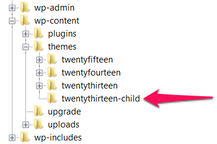
- Create a folder for your theme in
wp-content/themes(no spaces) - Add your 3 theme files (style.css, functions.php and screenshot.png) to your theme folder
Activate your theme
Go to Appearance > Themes in the WP admin.
Your child theme is now there!
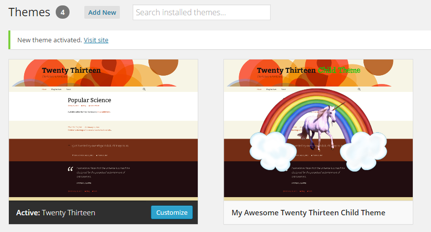
Where We're At Now
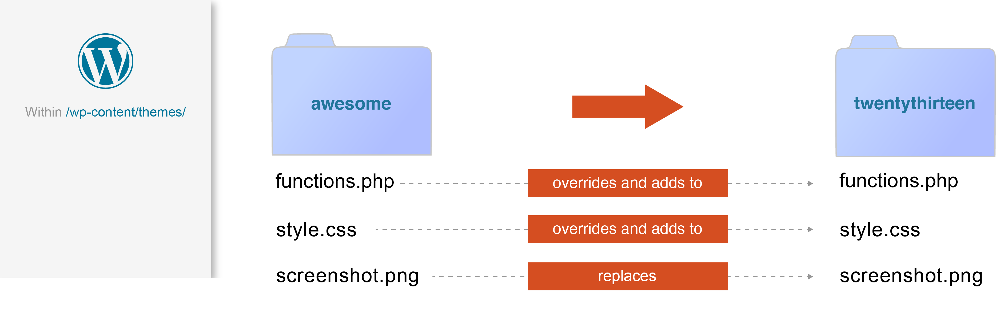
The 3 files illustrate how a child theme's files affect the parent's files -- they either override and add functionality to its identically named file, or completely replaces it.
Exercise time!
Make a child theme
- Create a child theme of Twenty Thirteen
- Make sure you create a screenshot
- Activate your theme
Modifying the Parent Theme
Making CSS Changes
Your style.css file will override styles in the parent theme's style.css file with the same selectors.
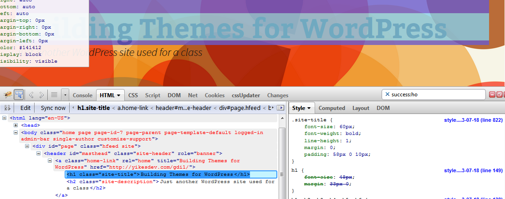
Modifying the Parent Theme
Making CSS Changes
Example: Changing the size of the header title. The font-size for .site-title is 60px. Use the css selector in your child theme to change it.
.site-title {
font-size: 40px;
}
Modifying the Parent Theme
Making Template Changes
First, an introduction to templates...
Templates
From the Codex
Template files are the building blocks of your WordPress site. They fit together like the pieces of a puzzle to generate the web pages on your site.
Templates
- Assemble HTML, PHP and content from the database to display pages in a web browser
- Determines how a webpage or part of a webpage looks
Twenty Thirteen Template Files
In the twentythirteen folder is all the theme's the template files. You can create your own versions of these files in your child theme.
Some common template files
- header.php - The global header for your site
- footer.php - The global footer for your site
- index.php - The posts (blog) page
- page.php - Static pages
- sidebar.php - Your sidebar widget areas
- single.php - A single post
Modifying the Parent Theme
Making template changes
Example: Removing WordPress credit from footer.php
- Open
footer.phpin the twentythirteen folder and save a copy into your theme's folder. - Alter the contents of .site-info and save the file.
<div class="site-info">
<?php do_action( 'twentythirteen_credits' ); ?>
<a href="<?php echo esc_url( __( 'http://wordpress.org/', 'twentythirteen' ) ); ?>" title="<?php esc_attr_e( 'Semantic Personal Publishing Platform', 'twentythirteen' ); ?>"><?php printf( __( 'Proudly powered by %s', 'twentythirteen' ), 'WordPress' ); ?></a>
</div?><!-- .site-info -->
Modifying the Parent Theme
Making your own templates
Twentythirteen has just one default template, a content area with a right sidebar.
You can make additional templates. Templates you create will appear in the Template drop-down menu on the Page edit screen.
What a template file needs
First, a name (this goes at the top of your file)
<?php
/*
Template Name: [Type your template name here]
*/
?>
Second, at least these 2 include tags
<?php get_header(); ?>
<?php get_footer(); ?>
Modifying the Parent Theme
Making your own templates
Example: Create a full-width, no sidebar template.
- Open
page.phpin the twentythirteen folder. - Rename it
page-fullwidth.phpand save it into your theme's folder - Add the
Template Name:to top of the file - Remove
<?php get_sidebar(); ?> - Adjust the css to make
.entry-contentfull width.
Tip: body classes
WordPress dynamically adds classes to the body tag depending what page you are on or template you are using. Use them to create unique styles for pages.
Exercise time!
Practice modifying the parent theme
- Make CSS changes to the parent theme with your child theme
- Make your own version of templates that override the parent theme
- Add a new template to your theme
Template tags
Template tags let you insert dynamic content into your templates.
Include tags
Used in a template to execute the HTML and PHP found in another template
<?php get_search_form(); ?>
<?php get_sidebar(); ?>
<?php comments_template(); ?>
Check out the WordPress Codex Include Tags Page
Include tags
Using Include tags
Example: Add the search form to the header
- Open
header.phpin the twentythirteen folder and save a copy into your theme's folder. - Add
<?php get_search_form(); ?>to the header just below the site description
Function tags
Used to display useful WordPress PHP functions
<?php the_title(); ?>
<?php the_content(); ?>
<?php the_permalink(); ?>
<?php the_excerpt(); ?>
<?php get_the_post_thumbnail(); ?>
Check out the WordPress Codex Function Reference
Function tags
Using Function tags
Example: Add a copyright to the footer
- Open
footer.phpin your theme's folder. - Add code to create a copyright line
Copyright © <?php echo date('Y'); ?> <a href="<?php echo home_url( '/' ); ?>"><?php bloginfo( 'name' ); ?></a>
Conditional tags
Used to grab and display content depending on what page it is and the conditions it matches.
is_front_page()
is_home()
is_single()
is_page()
is_category()
Check out the WordPress Codex Conditional Tags Page and this blog post on is_front_page() vs. is_home()
Function tags
Using Conditional tags
Example: Add credit to the footer that only shows on the home page
- Open
footer.php - Add code to create a credit line
<?php
if(is_front_page()){
echo "<p>Web design by [your name here]</p>";
}
?>
Function tags
Using Conditional tags
Example: Add a div to the header that only shows on the home page
header.php
<?php if (is_front_page() ) {?>
<div class='header-homediv'>
<h1>THIS IS THE HOME PAGE</h1>
</div>
<?php } ?>
Exercise time!
Practice using template tags
- Use an include tag. Suggestion: Add the search form to a template
- Use a function tag. Suggestion: Use the function
bloginfoto add the blog description to the footer. - Use a conditional tag. Suggestion: A show some text in the header only on the home page
Handy Template Tags
get_template_part
get_template_part is a special include tag that allows you to load any other template file into a template. It lets you to reuse code in multiple templates.
Important Dev rule #2 Don't Repeat Yourself.
Check out the WordPress Codex get template part
Handy Template Tags
get_template_part
<?php get_template_part( 'content', 'none' ); ?>
Will load a template file named content-none.php
Handy Template Tags
the_post_thumbnail
<?php the_post_thumbnail('medium'); ?>
This will create an img tag for the medium sized version of a post or page's "Featured Image"
Check out the WordPress Codex the post thumbnail
Handy Template Tags
the_post_thumbnail
You can bring up the thumbnail, medium, large, original or a custom size of the featured image. If no size is defined it will default to the thumbnail size.
<?php the_post_thumbnail('thumbnail'); ?>
<?php the_post_thumbnail('medium'); ?>
<?php the_post_thumbnail('large'); ?>
<?php the_post_thumbnail('full'); ?>
<?php the_post_thumbnail( array(250,100) ); ?>
Handy Template Tags
get_template_directory_uri and get_stylesheet_directory_uri
get_template_directory_uri- Retrieves stylesheet directory address for the current theme.get_stylesheet_directory_uri- Retrieves stylesheet directory address for the current theme/child theme.
Check out the WordPress Codex get template directory uri and get stylesheet directory uri
Handy Template Tags
get_template_directory_uri and get_stylesheet_directory_uri
To include images in your theme you can use the code below.
<img src="<?php echo get_stylesheet_directory_uri(); ?>/images/image.png" /><img src="http://whatever.com/wp-content/mytheme/images/image.png" />The WordPress Template Hierarchy
codex.wordpress.org says:
WordPress uses the Query String — information contained within each link on your web site — to decide which template or set of templates will be used to display the page.
The WordPress Template Hierarchy
What it is
If you name a template file a certain way, it will automatically apply to a certain page.
There's a chart on WordPress.org that shows how the naming conventions work.

The WordPress Template Hierarchy
The chart looks confusing, but if you break it down it's really pretty simple. We'll look at the template hierarchy for category archives.
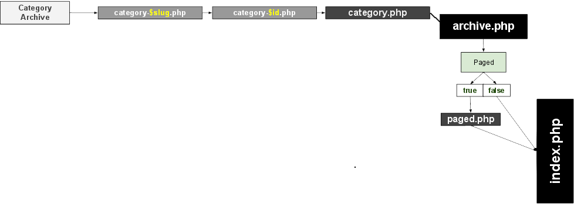
The WordPress Template Hierarchy
How it works
If you name template a file a certain way they will affect the display of a certain page. Just follow the chart to find the correct naming convention.
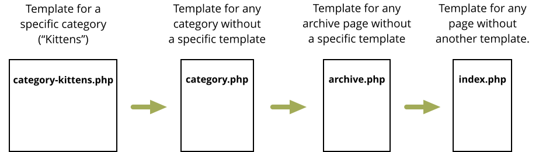
The WordPress Template Hierarchy
How it works
Custom archive and post templates can be named by id or slug
- category-$slug
- category-$id
- category-kittens
- category-12
Check out this interactive version of the chart
The WordPress Template Hierarchy
Example: Make an archive term template
- Open
category.phpin the twentythirteen folder. - Rename it
category-[slug].phpand save it into your theme's folder - Modify the template
The WordPress Template Hierarchy
How it works
index.php is the end of the road. Any page that does not have another template file made for it will use index.php aka the default template for the posts (blog) page.
Exercise time!
Practice using the WordPress Template Hierarchy
- Make a special template for a tag or category you create
Starter Themes
Child themes are great for modifying existing themes, but you can create your own custom theme with a starter theme.
Starter themes have base WordPress functionality, but very little or no style. Starter theme developers encourage you to hack it and make it your own.
Starter Themes
Starter themes can also come with a base framework, like HTML 5 Boilerplate, Twitter Bootstrap or a responsive grid if you enjoy using frameworks. There's no need to reinvent the wheel!
Popular Starter Themes
Exercise time!
Install a Starter theme
- Download and install a starter theme
- Make it your own by editing style.css and screenshot.png
Resources
Essential WordPress Codex Articles
- The WordPress Codex - the online manual for WordPress and a living repository for WordPress information and documentation.
- Theme Development
- Stepping Into Templates
A review...
- What is the #1 rule of WordPress development?
- What is the proper method of modifying an existing WordPress theme?
- What is a conditional tag?
- What is the purpose of the WordPress Template Hierarchy?
- What is the benefit of using a Starter Theme?
The Loop
codex.wordpress.org says:
The Loop is PHP code used by WordPress to display posts.
The Loop
Runs on Every Page
The Loop is a set of instructions in a template that grabs content and displays it on a page.
It's called a "loop" because the set of instructions can be repeated multiple times on a page. For example, index.php.
Check out the WordPress Codex The Loop
The Loop
What it is
Within the main loop are the main parts of a page or post.
<?php the_title(); ?>
<?php the_content(); ?>
The Loop
What it is
You can also grab additional content, aka Metadata, attached to pages or posts. Some function tags will only work if they are placed within The Loop.
- Author
- Date
- Featured Image
- Categories (posts only)
- Tags (posts only)
- Etc.
The Loop
Examples
Let's check out The Loop in a few different Twentythirteen templates
page.phpindex.phpcontent.php
Exercise time!
Practice modifying the WordPress Loop
- Make a copy of a template in your child theme and modify the default loop
- Suggestion: Remove comments from pages.
- List of WordPress Template Tags
WP_Query
Use WP_Query to write your own loops
Check out the WordPress Codex WP_Query
WP_Query
Basic Structure
<!-- // The Query -->
<?php $myloop = new WP_Query( $args ); ?>
<ul>
<!-- // Loop starts -->
<?php while ($myloop->have_posts()) : $myloop->the_post(); ?>
<li>
<h2><?php the_title(); ?></h2>
<p><?php the_content(); ?></p>
</li>
<!-- // Loop ends -->
<?php endwhile; ?>
</ul>
Check out the WordPress Codex WP_Query
WP_Query
$args
Show posts by a certain author:<!-- // The Query -->
<?php $myloop = new WP_Query( 'author_name=tracy' ); ?>
Check out the WordPress Codex WP_Query Author Parameters
WP_Query
$args
Show posts in a certain category:<!-- // The Query -->
<?php $myloop = new WP_Query( 'cat=4' ); ?>
Check out the WordPress Codex WP_Query Category Parameters
WP_Query
$args
Show posts with a certain tag:<!-- // The Query -->
<?php $myloop = new WP_Query( 'tag=cats' ); ?>
Check out the WordPress Codex WP_Query Tag Parameters
WP_Query
$args
Show x number of posts at a time:<!-- // The Query -->
<?php $myloop = new WP_Query( 'posts_per_page=5' ); ?>
Check out the WordPress Codex WP_Query Pagination Parameters
WP_Query
$args
Order posts in alphabetical order by title:<!-- // The Query -->
<?php $myloop = new WP_Query( 'orderby=title' ); ?>
Check out the WordPress Codex WP_Query Orderby Parameters
WP_Query
$args
Put multiple parameters in an array:<!-- // The Query -->
<?php $myloop = new WP_Query( array(
'cat' => 'cats',
'posts_per_page' => '4',
'orderby' => 'date',
'order' => 'DESC'
) );
?>
<ul>
<!-- // The Loop -->
<?php while ($myloop->have_posts()) : $myloop->the_post(); ?>
<li>
<h2><?php the_title(); ?></h2>
<p><?php the_excerpt(); ?></p>
</li>
<?php endwhile; ?>
<!-- // The end of The Loop -->
</ul>
WP_Query
If inside the main loop
Use wp_reset_postdata();
<!-- // The Query -->
<?php $myloop = new WP_Query( $args ); ?>
<ul>
<!-- // Loop starts -->
<?php while ($myloop->have_posts()) : $myloop->the_post(); ?>
<li>
<h2><?php the_title(); ?></h2>
<p><?php the_content(); ?></p>
</li>
<!-- // Loop ends -->
<?php endwhile; ?>
<?php wp_reset_postdata(); // restores the main loop ?>
</ul>
Tip: Use the Transients API
<?php
// Check for transient. If none, then execute WP_Query
if ( false === ( $lastpostsloop = get_transient( 'home_lastposts_loop' ) ) ) {
$lastpostsloop = new WP_Query( $args ));
// Put the results in a transient. Expire after 12 hours.
set_transient( 'home_lastposts_loop', $lastpostsloop, 12 * HOUR_IN_SECONDS );
} ?>
<!-- // The Loop -->
<?php while ($lastpostsloop->have_posts()) : $lastpostsloop->the_post(); ?>
<h3><a href="<?php the_permalink(); ?>"><?php the_title(); ?></a></h3>
<!-- // The end of The Loop -->
<?php endwhile; ?>
<?php wp_reset_postdata(); ?>
Check out the WordPress Codex Transients API
Exercise time!
Make a "Recent Posts" featured content box on the home page
- Make a Home Page Template
- Add a div for your latest posts
- Create a WP_Query loop to show the latest 5 posts
- Experiment with different parameters (here's a link to all of them)
Adding functionality
functions.php
functions.php is a special file that acts like a plugin to add functionality to your theme.
Check out the WordPress Codex Functions File Explained
Adding functionality
functions.php in a child theme
functions.php works like style.css in a child theme. It adds to and modifies the parent's functions.php. You don't make a copy of it in your child theme folder like you do with template files, you start a new one.
<?php
add_action( 'wp_enqueue_scripts', 'theme_enqueue_styles' );
function theme_enqueue_styles() {
wp_enqueue_style( 'parent-style', get_template_directory_uri() . '/style.css' );
wp_enqueue_style( 'child-style',
get_stylesheet_directory_uri() . '/style.css',
array('parent-style')
);
}
(all of your additional functions go here)
Adding functionality
functions.php
You can tell your theme to load external files in functions.php. It helps you keep functions.php from being overloaded with too much code.
// Load a file from the inc folder
require_once 'inc/my-file.php';
Adding functionality
Keeping things organized
It's important to keep theme files organized.
- twentythirteen-child (theme folder)
- css (any theme css you want to keep out of style.css)
- images (all the images used in your theme)
- inc (includes, I put functionality-related stuff in here)
- css (css used for functionality in the
incfolder) - images (images used for functionality in the
incfolder) - js (js used for functionality in the
incfolder)
- css (css used for functionality in the
- js (theme javascript)
Adding functionality
Hooks, Action and Filters
codex.wordpress.org says:
Hooks are provided by WordPress to allow your plugin to 'hook into' the rest of WordPress...There are 2 kinds of hooks:
- Actions: A custom PHP function defined in your plugin (or theme) and hooked, i.e. set to respond, to specific events that take place in WordPress.
- Filters: Functions that WordPress passes data through, at certain points in execution, just before taking some action with the data
Adding functionality
Hooks, Action and Filters
Hooks, Actions and Filters allow you to change core WordPress functionality without breaking it.
Adding functionality
Hooks, Action and Filters
Hooks - Points at which WordPress allows you to tap into a function and safely modify it.
Some examples are:
- Changing the length of the excerpt
- Adding Widgetized areas
- Adding Menu areas
- And hundreds of other things
Adding functionality
Hooks, Action and Filters
Actions - A hook that makes something new happen when a WordPress function is triggered.
Adding functionality
Hooks, Action and Filters
Filters - A hook that modifies a WordPress function when it is triggered.
Visual Demo of Hooks, Actions and Filters
Adding functionality
Handy WordPress Functions
The following is an overview of some handy WordPress functions you can hook into to enrich your themes.
Check out the WordPress Codex Entire Function Reference
Adding functionality
add_image_size
You can add custom images sizes (in addition to the default thumb, medium, large and original).
add_image_size( 'my-img', 400, 400 ); // soft proportional crop mode
add_image_size( 'other-img', 200, 269, true ); // hard crop mode
add_image_size( 'custom-size', 220, 220, array( 'left', 'top' ) ); // Hard crop left top
Check out the WordPress Codex add image size
Adding functionality
get_the_post_thumbnail
In your queries you can use get_the_post_thumbnail to load custom sizes of featured images.
<?php echo get_the_post_thumbnail($page->ID, 'my-img'); ?>
Adding functionality
Tip: Regenerate Thumbnails
Adding custom thumbnail sizes to functions.php will not affect images previously uploaded, only images uploaded from that point on. You will need to regenerate older images.
You can use the handy Force Regenerate Thumbnails plugin to create the custom sizes of your previously uploaded images.
Exercise time!
Add a custom thumbnail to your theme!
- Register a custom thumbnail size
- Use your custom thumbnail size in your recent post loop on your home page.
Adding functionality
register_nav_menus
If you have used custom menus in WordPress sites before (Appearance > Menus in the admin) you know a theme can have specific menu locations.
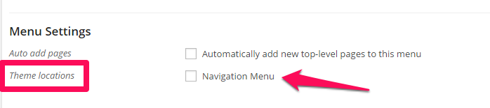
Check out the WordPress Codex register nav menus
Adding functionality
register_nav_menus
Use register_nav_menus in functions.php to register your menus.
register_nav_menus( array(
'footer-nav' => 'Footer Menu',
) );
Adding functionality
wp_nav_menu
Use the wp_nav_menu tag to assign a menu to a location in your theme.
<?php wp_nav_menu( array( 'theme_location' => 'footer-nav' ) ); ?>
Check out the WordPress Codex wp nav menu
Adding functionality
wp_nav_menu
Add fallback_cb to make sure no menu displays if there are no custom menus assigned to that location.
<?php wp_nav_menu( array( 'theme_location' => 'footer-nav', 'fallback_cb' => false ) ); ?>
Check out the WordPress Codex wp nav menu
Adding functionality
wp_nav_menu
You can also use wp_nav_menu to load any custom menu you've created in Appearance > Menus. You can use the menu's ID, slug, or name.
<?php wp_nav_menu( array('menu' => '2' )); ?>
Exercise time!
Register a Nav Menu
- Register a nav menu (suggestion: footer-nav)
- Add the wp_nav_menu tag to load that menu in the footer
- Create a new menu in Appearance > Menus and assign it to that Theme location
Adding functionality
register_sidebar
Most themes come with specific widgetized areas -- locations in the sidebar, footer, header, etc. that you can drag and drop widgets into. You can use register_sidebar to create widgetized areas in your theme.
Check out the WordPress Codex register sidebar
Adding functionality
register_sidebar
Use register_sidebar to register your widgetized areas.
register_sidebar(array(
'name' => __( 'Header Widget Area' ),
'id' => 'headerwidget',
'description' => __( 'The header widget area.' ),
'before_widget' => '<div id="%1$s" class="headerwidget %2$s">',
'after_widget' => '</div>',
'before_title' => '<h4 class="headerwidgettitle">',
'after_title' => '</h4>',
));
Adding functionality
dynamic_sidebar
Use the dynamic_sidebar tag to assign a widgetized area to a location in your theme.
<?php dynamic_sidebar( 'headerwidget' ); ?>
Check out the WordPress Codex dynamic sidebar
Adding functionality
dynamic_sidebar with conditional tags
Use the dynamic_sidebar tag along with conditional tags to load certain widget areas on certain pages.
if(is_page( 'about' )){
dynamic_sidebar( 'aboutsidebar' );
}
if(is_page( 'contact' )){
dynamic_sidebar( 'contactsidebar' );
}
Exercise time!
Add some sidebars to your theme!
Try to use any of the functions we learned today.
- Register a sidebar - try making one in the header
- Add the dynamic_sidebar tag to the header to display the sidebar
- Try adding widgets to it and see what happens
Try to do it yourself (if you're stuck view functions.php on Github).
Adding functionality
WP_Widget
Not only can you create widgetized areas, you can create widgets to drag and drop into those areas.
Check out the WordPress Codex Widgets API
Creating Widgets
WP_Widget
Note: You should put the widget code in its own file. If your widget is breaking the site you can easily turn it "on" and "off" while you troubleshoot code. Add a line of code to functions.php to load the file.
"On"
/* load my widget */
require_once 'inc/my-widget.php';
"Off"
/* load my widget */
//require_once 'inc/my-widget.php';
Creating Widgets
Example Widget: My Awesome Widget
We'll go through all the code for My Awesome Widget
Exercise time!
Make a widget
We'll be here to help.
Resources
- BuildWordPress Themes from Scratch with lynda.com By Morten Rand-Hendriksen
- Making the Perfect WordPress Theme
- WP Snippets - WordPress Code Snippets
- How to Create a WordPress Widget - 4 Killer Tutorials You Should Read
- Pippin's Plugins - Learn Plugin Development